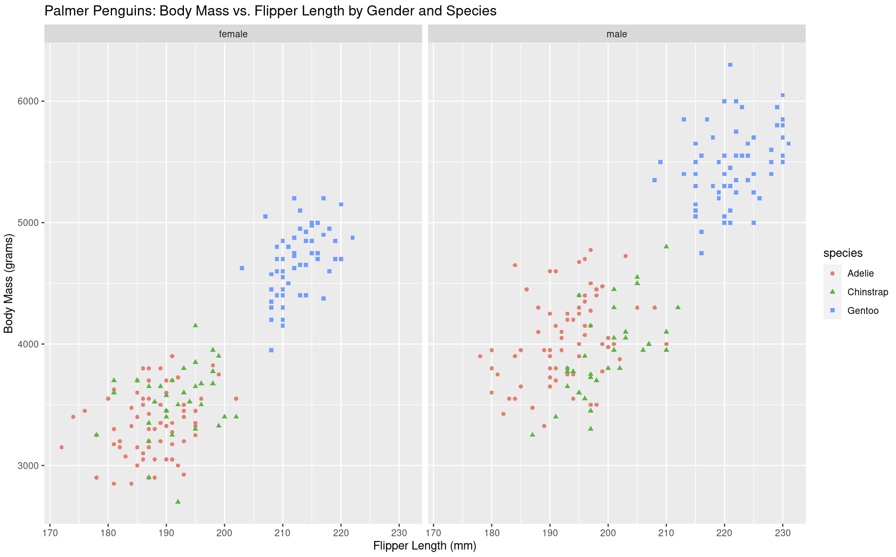

Avocado Prices
Original Dataset here
I will be looking at the prices of Avocado's in different regions of USA (Midsouth, Northeast,
Plains, Southeast, West) from 2015 - 2018, and visualizing the change over time using R Programming.
After uploading the dataset to R, I was able to plot the following line graph quick and easily using ggplot.
The Date and Average Price are on the axis', and the lines are colour coded by region.

 Although this line graph is sufficient and achieves my aim of showing the change in avocado prices, I still
think it is basic and the visualization can be improved. I will try to improve this graph by adding titles,
adding a theme to the graph, enhancing the data I want to show, and editing the colours and fonts.
Although this line graph is sufficient and achieves my aim of showing the change in avocado prices, I still
think it is basic and the visualization can be improved. I will try to improve this graph by adding titles,
adding a theme to the graph, enhancing the data I want to show, and editing the colours and fonts.I will start by using 'labs' to add a title and subtitle to the graph, and modify the axis' and legends names.

I then used the 'fivethirtyeight' theme from ggthemes which slightly changed the feel and layout of the graph, removing some gridlines and moving the legend to the bottom of the graph. The theme set my axis titles to blanks, so I readded these using element text.
I also increased the thickness and opacity of the lines by increasing line size to 1.5, and alpha to 0.75, to show each region line more clearly.
I then enhanced the data that I wanted to highlight. For this graph, I wanted to show which region (Northeast) had the highest average price. I kept this Northeast line solid, whilst changing the rest to dashed lines by utilizing R's dyplr package and its mutate function. I then made changes to the geom_line code and to the line type, to differentiate between Northeast data, and the rest of the data.


I am happy with the improvements that I have made to this line graph. I will just make some final aesthetic changes to the font and colour of the lines.
A n a l y s i s
We can clearly see that the region with the highest average price is the Northeast (blue line), and the region
with the lowest average price is the West (orange line). A big reason for this is USA's heavy reliance on Mexico
for their avocados. In 2022, USA imported 1.3m metric tons of avocados from Mexico, whereas they only produced
156k metric tons themselves. This will have a big effect on the price of avocados because the west of USA borders
Mexico, which will result in lower transportation costs compared to the northeast of USA.
Another factor making the average price cheaper in the West, is the vast majority of avocados grown in the US are from
California, where the West Coast produces a suitable climate for the growth of avocados. This produces lower prices in
the West as they have local produce available, in addition to the lower transportation costs. We see the opposite of
this with the Northeast having the most expensive avocados, with the region being furthest from Mexico and the West of
USA.
We see two big peaks at the back end of the year in both 2016 and 2017, where the avocado price rises sharply. The rise
in late 2016 can be explained by many
avocado producers' in Mexico going on strike
in October 2016, causing avocados to triple in price in some US cities.
The 2017 peak can be explained by the reduced harvest
in Mexico and California in mid- to late-2017, causing prices to surge again.
A d d i t i o n a l A v o c a d o G r a p h s
I created this lollipop chart showing the price of avocados by region. The 'lollipops' have produced
a visually attractive graph with the emphasis on the lollipop's dot drawing the viewer's attention
towards that region's average.
I started by creating a new column for the average price by region by using dyplr's mutate function, and rearranged
it in descending order using tidyverse's fct_reorder. We then plot the graph, originally placing Region on x axis
and Average Price on y axis, this is done as Average Price is discrete data, whereas the x axis needs continuous
data. We then flip the graph using coord_flip to get the axis on the sides we want. Next I used geom_jitter to add
small variation to each point on the graph to avoid overlapping plots. Then geom_hline is used to create the average
overall line where all the 'lollipops' begin. The geom_segment is then utilised for creating the 'lollipop' stick,
where a coloured line goes from the geom_hline out to the average for that specific region.
I also created a simple bar graph showing the average price of avocados in each region. I
put the columns in descending order by Average Price using ggplot's reorder function. I
manually added a blue colour scale to emphasize the price difference.
What I Learnt:
• How to use themes and modify them to add/remove certain elements.
• How to use dyplr to create different line types using a True/False column.
• How to create a lollipop chart using the average as the 'lollipop'.
Palmer Penguins
Original Dataset hereI analysed a dataset containing penguins based in Palmer Archipelago, Antartica.
The data includes size measurements of three species of penguin, from three different islands.
I first looked at body mass vs flipper length for each species. We can see a positive relationship
between the two measurements, with Gentoo penguins having the largest body mass and flipper length
of the three species. This can be seen with the blue squares dominating the top right of the
scatterplot.
I then took a look at the difference between male and female penguins using a facet grid. Both scatterplots shows a similar pattern as the previous graph, but this displays the contrast in size between the genders, with males being larger than females in all three species.
